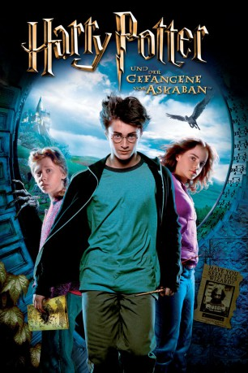

Auszeichnungen: für 2 Oscars nominiert 1 BAFTA-Awards gewonnen
 gesehen am 09.03.2015
gesehen am 09.03.2015Alternativ: Harry Potter and the Prisoner of Azkaban
Auszeichnungen: für 2 Oscars nominiert 1 BAFTA-Awards gewonnen gesehen am 09.03.2015
 
 IMDB-Wertung: 7.9 / 10
IMDB-Wertung: 7.9 / 10  Metascore:
Metascore: 
Während die abscheuliche Tante Magda über den Nachthimmel schwebt, kehrt Harry nach Hogwarts zurück, um sein drittes Ausbildungsjahr zu beginnen. Eine haarsträubende Busreise im Fahrenden Ritter bringt ihn zur Winkelgasse, wo er erfährt, dass der flüchtige Sträfling Sirius Black hinter ihm her ist. So beginnt das neue Schuljahr. In Hogwarts lernen Harry und seine Freunde die schwierige Kunst, mit einem Hippogreif umzugehen, die ständig ihre Gestalt verändernden Irrwichte in lustige Formen zu verwandeln und sogar die Zeit zurückzudrehen. Die Seelen aussaugenden Dementoren belauern die Schule und bedrohen Harry, während Der-dessen-Name-nicht-genannt-werden-darf einen Spitzel in der Burg untergebracht hat. Und Harry muss es mit allen aufnehmen.
Jahr: 2004
Dauer: 142 Minuten
FSK: 12
Land: England Studio: Warner Bros.Tonspuren: DD5.1 - ,
Untertitel:
Auflösung: 1080p (1920×800) Größe: 13516 MB
Genre: Abenteuer, Familie, Fantasy, Mystery
Regisseur: Alfonso Cuarón
Drehbuch: J.K. Rowling, Steve Kloves
Soundtrack: John Williams
Darsteller:
 Daniel Radcliffe als Harry Potter
Daniel Radcliffe als Harry Potter Pam Ferris als Aunt Marge
Pam Ferris als Aunt Marge Fiona Shaw als Aunt Petunia
Fiona Shaw als Aunt Petunia Harry Melling als Dudley Dursley
Harry Melling als Dudley Dursley Adrian Rawlins als James Potter
Adrian Rawlins als James Potter Geraldine Somerville als Lily Potter
Geraldine Somerville als Lily Potter Lee Ingleby als Stan Shunpike
Lee Ingleby als Stan Shunpike Gary Oldman als Sirius Black
Gary Oldman als Sirius Black Robert Hardy als Cornelius Fudge
Robert Hardy als Cornelius Fudge Rupert Grint als Ron Weasley
Rupert Grint als Ron Weasley Emma Watson als Hermione Granger
Emma Watson als Hermione Granger Oliver Phelps als George Weasley
Oliver Phelps als George Weasley James Phelps als Fred Weasley
James Phelps als Fred Weasley Chris Rankin als Percy Weasley
Chris Rankin als Percy Weasley Julie Walters als Mrs. Molly Weasley
Julie Walters als Mrs. Molly Weasley Bonnie Wright als Ginny Weasley
Bonnie Wright als Ginny Weasley Mark Williams als Mr. Arthur Weasley
Mark Williams als Mr. Arthur Weasley David Thewlis als Professor Lupin
David Thewlis als Professor Lupin Devon Murray als Seamus Finnegan
Devon Murray als Seamus Finnegan Warwick Davis als Wizard
Warwick Davis als Wizard David Bradley als Argus Filch
David Bradley als Argus Filch Michael Gambon als Albus Dumbledore
Michael Gambon als Albus Dumbledore Alan Rickman als Professor Severus Snape
Alan Rickman als Professor Severus Snape Maggie Smith als Professor Minerva McGonagall
Maggie Smith als Professor Minerva McGonagall Robbie Coltrane als Rubeus Hagrid
Robbie Coltrane als Rubeus Hagrid Matthew Lewis als Neville Longbottom
Matthew Lewis als Neville Longbottom Tom Felton als Draco Malfoy
Tom Felton als Draco Malfoy Bronson Webb als Slytherin Boy
Bronson Webb als Slytherin Boy Josh Herdman als Gregory Goyle
Josh Herdman als Gregory Goyle Alfred Enoch als Dean Thomas
Alfred Enoch als Dean Thomas Dawn French als Fat Lady in Painting
Dawn French als Fat Lady in Painting Paul Whitehouse als Sir Cadogan
Paul Whitehouse als Sir Cadogan Emma Thompson als Professor Sybil Trelawney
Emma Thompson als Professor Sybil Trelawney Jamie Waylett als Vincent Crabbe
Jamie Waylett als Vincent Crabbe Julie Christie als Madame Rosmerta
Julie Christie als Madame Rosmerta Timothy Spall als Peter Pettigrew
Timothy Spall als Peter Pettigrew Jimmy Gardner als Ernie the Bus Driver
Jimmy Gardner als Ernie the Bus DriverDatei: X:\7+mehr(A-Z)\Harry Potter\Harry Potter 3 - und der Gefangene von Askaban (2004, FSK12, 1920x800).mkv seit 15.02.2015
Festplatte: HD Collection-7+mehr(A-Z)+Person
 Es gibt insgesamt 17 Filme in der Gruppe '7+mehr(A-Z)\Harry Potter'
Es gibt insgesamt 17 Filme in der Gruppe '7+mehr(A-Z)\Harry Potter'